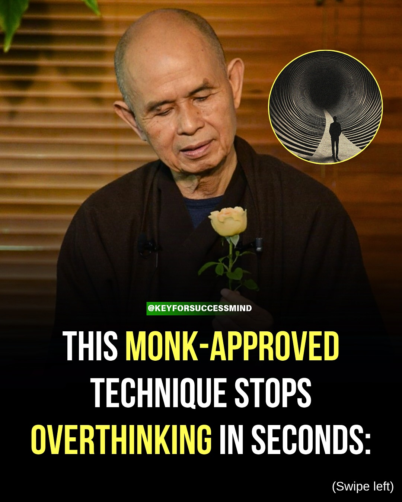
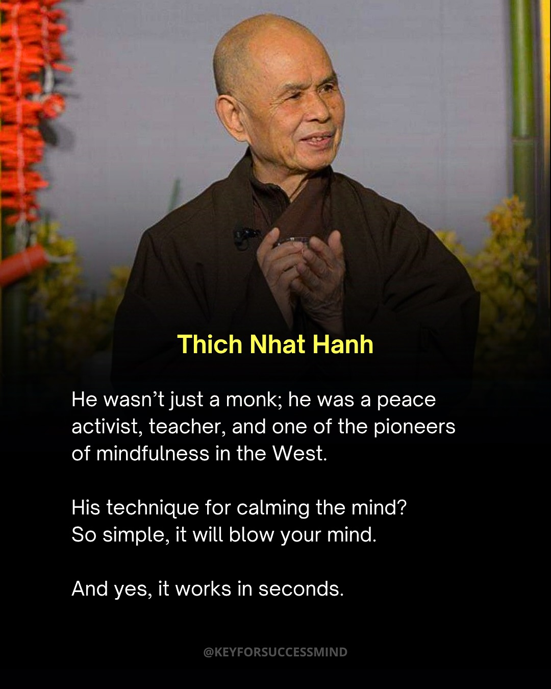
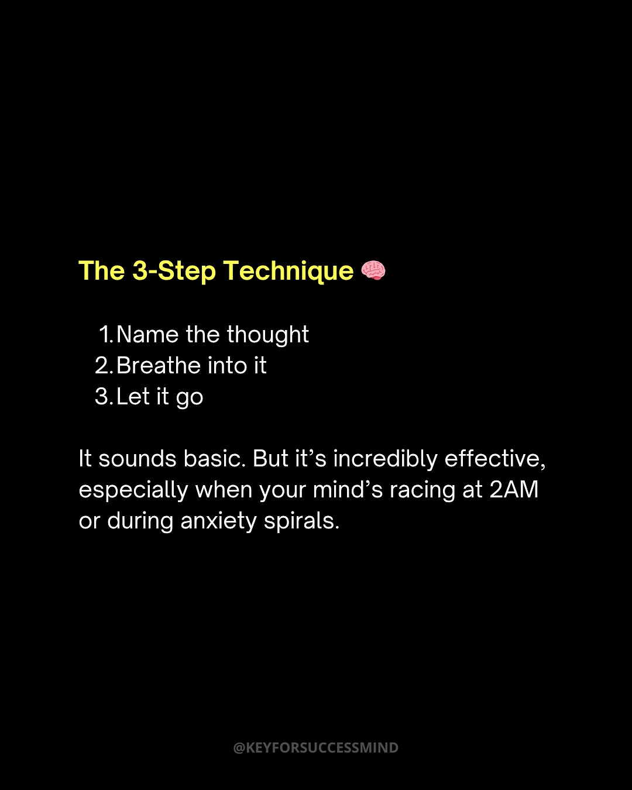
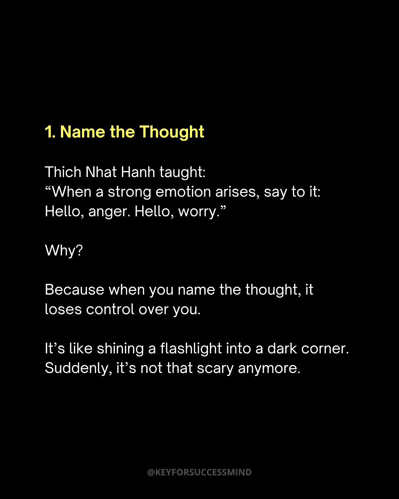
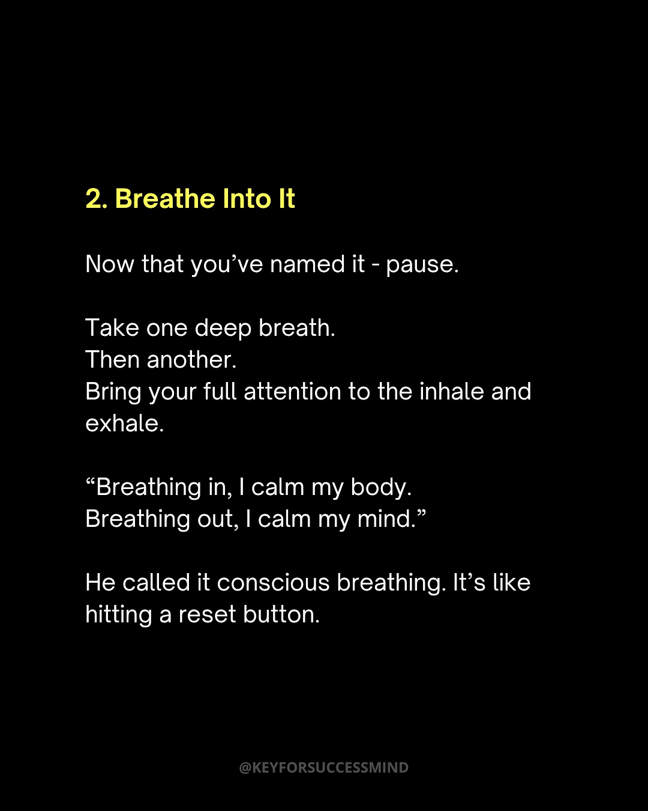
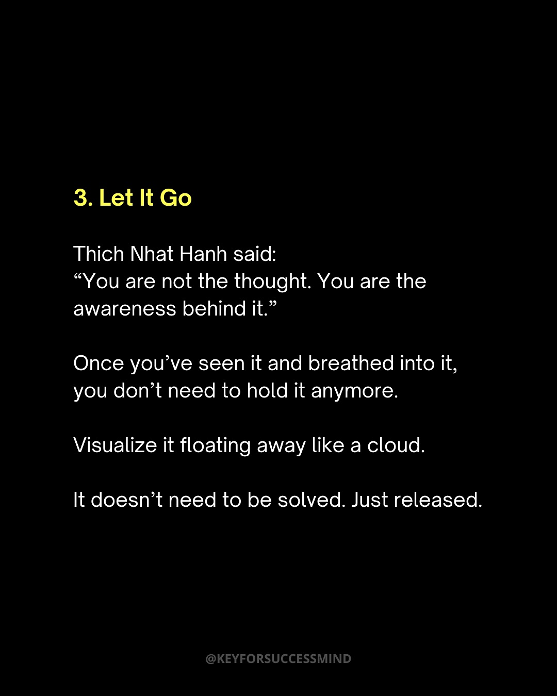
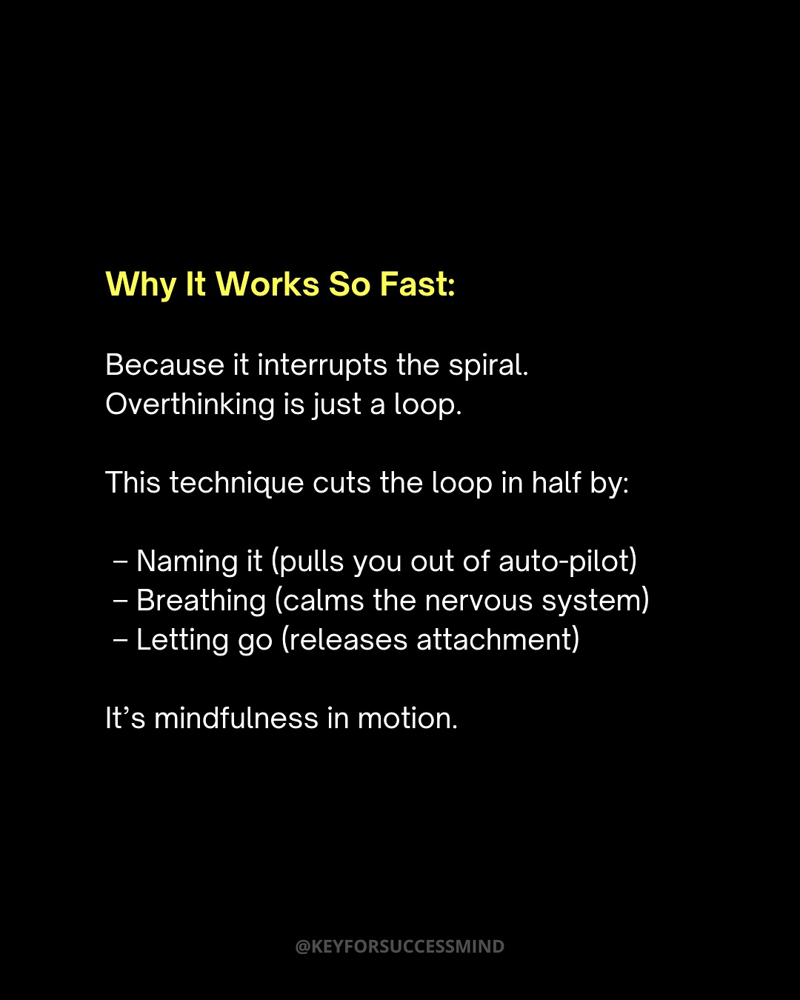
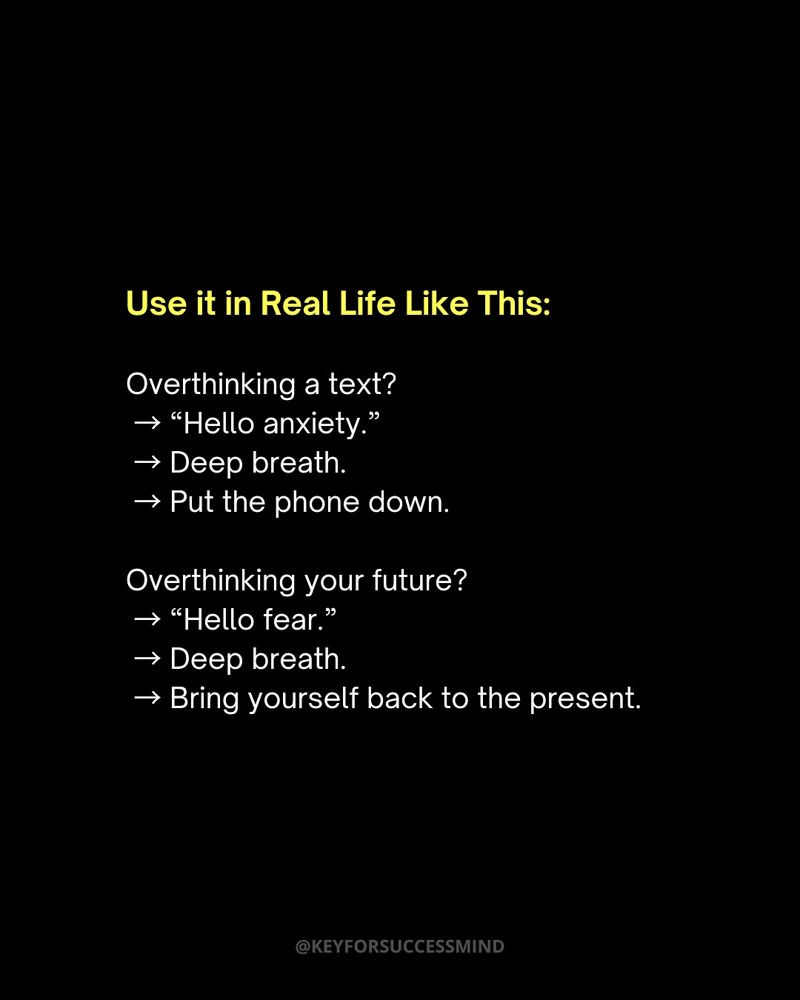
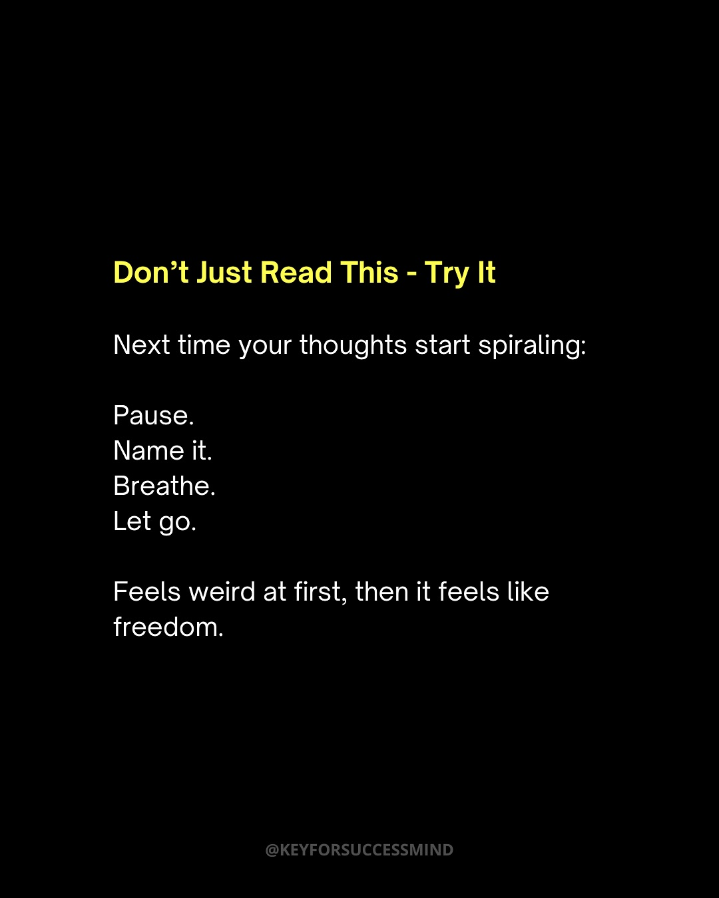

Instagram Post

THIS MONK-APPROVED TECHNIQUE STOPS OVERTHINKING...
carousel (10 slides) (enriched by ClaudeClaw)
Summary
THIS MONK-APPROVED TECHNIQUE STOPS OVERTHINKING IN SECOND... | THIS MONK-APPROVED TECHNIQUE STOPS OVERTHINKING IN SECOND... | Thich Nhat Hanh He wasn't just a monk; he was a peace act... | The 3-Step Technique 🧠 1 | 1 | 2 | 3 | Why It Works So Fast: Because it interrupts the spiral | Use it in Real Life Like This: Overthinking a text? → “He... | Don't Just Read This - Try It Next time your tho...
1
@KEYFORSUCCESSMIND THIS MONK-APPROVED TECHNIQUE STOPS OVERTHINKING IN SECONDS: (Swipe left)
An elderly bald man in a brown robe holds a light yellow rose, with a circular inset image of a person walking into a swirling tunnel in the top right, and overlaid text promoting a technique to stop overthinking.
2
@KEYFORSUCCESSMIND THIS MONK-APPROVED TECHNIQUE STOPS OVERTHINKING IN SECONDS: (Swipe left)
A bald man in a brown robe holds a light yellow rose, with a circular inset image of a person walking into a dark, swirling tunnel in the upper right corner.
3
Thich Nhat Hanh He wasn't just a monk; he was a peace activist, teacher, and one of the pioneers of mindfulness in the West. His technique for calming the mind? So simple, it will blow your mind. And yes, it works in seconds. @KEYFORSUCCESSMIND
A bald, elderly man identified as Thich Nhat Hanh, wearing a brown robe, smiles and holds his hands together in front of a blurred background with orange and yellow elements.
4
The 3-Step Technique 🧠 1. Name the thought 2. Breathe into it 3. Let it go It sounds basic. But it's incredibly effective, especially when your mind's racing at 2AM or during anxiety spirals. @KEYFORSUCCESSMIND
A black background displays text in yellow and white, outlining a "3-Step Technique" for managing thoughts, with a brain emoji next to the title and a social media handle at the bottom.
5
1. Name the Thought Thich Nhat Hanh taught: “When a strong emotion arises, say to it: Hello, anger. Hello, worry.” Why? Because when you name the thought, it loses control over you. It’s like shining a flashlight into a dark corner. Suddenly, it’s not that scary anymore. @KEYFORSUCCESSMIND
The image displays white and yellow text on a plain black background, presenting a motivational quote and advice about naming thoughts and emotions.
6
2. Breathe Into It Now that you've named it - pause. Take one deep breath. Then another. Bring your full attention to the inhale and exhale. “Breathing in, I calm my body. Breathing out, I calm my mind.” He called it conscious breathing. It's like hitting a reset button. @KEYFORSUCCESSMIND
The image displays text in white and yellow font on a plain black background, providing instructions on conscious breathing.
7
3. Let It Go Thich Nhat Hanh said: “You are not the thought. You are the awareness behind it.” Once you’ve seen it and breathed into it, you don’t need to hold it anymore. Visualize it floating away like a cloud. It doesn’t need to be solved. Just released. @KEYFORSUCCESSMIND
A black background displays a motivational quote about letting go, with the title "3. Let It Go" in yellow and the rest of the text in white, including an attribution to Thich Nhat Hanh and a social media handle at the bottom.
8
Why It Works So Fast: Because it interrupts the spiral. Overthinking is just a loop. This technique cuts the loop in half by: – Naming it (pulls you out of auto-pilot) – Breathing (calms the nervous system) – Letting go (releases attachment) It's mindfulness in motion. @KEYFORSUCCESSMIND
The image displays white and yellow text on a black background, explaining a technique to interrupt overthinking by naming, breathing, and letting go, with a social media handle at the bottom.
9
Use it in Real Life Like This: Overthinking a text? → “Hello anxiety.” → Deep breath. → Put the phone down. Overthinking your future? → “Hello fear.” → Deep breath. → Bring yourself back to the present. @KEYFORSUCCESSMIND
The image displays white and yellow text on a black background, offering advice on how to manage overthinking about texts and the future.
10
Don't Just Read This - Try It Next time your thoughts start spiraling: Pause. Name it. Breathe. Let go. Feels weird at first, then it feels like freedom. @KEYFORSUCCESSMIND
A black image displays yellow and white text offering advice on how to manage spiraling thoughts, with a social media handle at the bottom.
All slides







